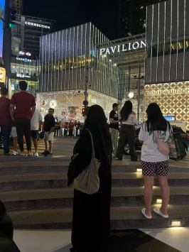
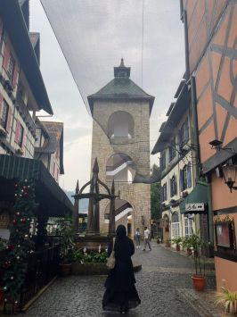

AKU tidak pernah tahu sejak kapan kehadiranmu menjadi sesuatu yang begitu penting dalam hidupku. Mungkin sejak pertama kali kita berbagi cerita sederhana, atau sejak aku sadar bahwa senyummu bisa mengubah hari yang melelahkan menjadi terasa lebih ringan. Sejak saat itu aku mengerti, bahwa cinta tidak selalu datang dengan cara yang besar dan dramatis, kadang ia hadir pelan, lewat perhatian kecil, lewat kebersamaan yang terlihat biasa tapi terasa luar biasa. Aku menyukai cara kita berjalan bersama, bukan karena jalannya selalu mudah, tapi karena kita memilih untuk tidak saling meninggalkan. Saat aku lelah, kamu ada. Saat kamu hampir menyerah, aku juga ingin jadi alasan kenapa kamu tetap bertahan. Karena bagiku, hubungan bukan tentang siapa yang paling kuat, tapi tentang dua orang yang saling menguatkan saat keduanya sama-sama rapuh. Aku mungkin bukan seseorang yang selalu bisa memberikan hal-hal sempurna, tapi aku ingin selalu punya hati yang cukup luas untuk memahami kamu, kesabaran yang cukup untuk tetap tinggal, dan ketulusan yang cukup untuk terus menjaga apa yang kita punya. Karena aku percaya, yang membuat hubungan bertahan lama bukan hanya rasa sayang, tapi juga niat untuk tetap memilih orang yang sama, bahkan saat keadaan tidak selalu menyenangkan. Aku ingin menjadi rumah untuk hatimu, tempat kamu pulang saat dunia terasa terlalu bising, tempat kamu bercerita tanpa takut dihakimi, dan tempat kamu merasa cukup hanya dengan menjadi dirimu sendiri. Dan kalau suatu hari kamu merasa tidak cukup baik, tidak cukup kuat, atau tidak cukup berharga, aku ingin kamu ingat bahwa di mataku kamu selalu lebih dari cukup. Aku tidak tahu sejauh apa perjalanan kita nanti, apakah akan selalu mulus atau penuh ujian, tapi satu hal yang aku tahu, selama kamu masih mau berjalan di sampingku, aku tidak akan mudah menyerah. Karena bagiku, cinta bukan tentang menemukan orang yang sempurna, tapi tentang menemukan seseorang yang membuatku ingin bertahan, memperbaiki diri, dan belajar menjadi lebih baik setiap harinya. Aku tidak menjanjikan hubungan tanpa masalah, tapi aku ingin menjanjikan satu hal sederhana: aku akan tetap ada, tetap mencoba, tetap berjuang, dan tetap memilih kamu, bukan hanya saat semuanya terasa indah, tapi juga saat keadaan sedang tidak baik-baik saja. Karena pada akhirnya, yang aku inginkan bukan hubungan yang terlihat sempurna di mata orang lain, tapi hubungan yang hangat, tulus, dan nyata di antara kita berdua. Hubungan di mana kita bisa tertawa bersama, tumbuh bersama, dan menua bersama, sambil tetap saling menggenggam seperti dua orang yang tidak pernah berhenti jatuh cinta, bahkan setelah waktu berjalan sangat lama. ❤️✨

MAU sesulit apa pun hari yang aku jalani, aku selalu mau tetap kembali ke kamu, ke tempat di mana hatiku merasa tenang tanpa harus berpura-pura kuat. Mau sejauh apa pun langkah kaki kita melangkah, aku mau tetap ada di sampingmu, bukan sebagai orang yang paling sempurna, tapi sebagai orang yang selalu berusaha untuk tetap bertahan bersama kamu. Mau kamu dalam keadaan terbaikmu, atau bahkan saat kamu merasa sedang tidak baik-baik saja, aku mau tetap melihatmu dengan cara yang sama, dengan rasa bangga yang sama, dengan rasa sayang yang tidak berubah. Karena bagiku, mencintai kamu bukan hanya tentang menikmati bahagiamu, tapi juga tentang tetap tinggal saat kamu sedang rapuh. Aku mau jadi seseorang yang kamu cari bukan hanya saat kamu tertawa, tapi juga saat kamu butuh tempat bercerita. Aku mau jadi alasan kecil kenapa kamu tetap percaya bahwa ketulusan itu masih ada. Aku mau jadi orang yang mengingatkan kamu bahwa kamu berharga, bahkan saat kamu sendiri meragukannya. Mau hubungan ini berjalan pelan, aku tidak masalah. Mau kita harus melewati banyak proses, aku juga tidak takut. Karena aku percaya, sesuatu yang dijaga dengan sabar akan bertahan lebih lama daripada sesuatu yang dipaksakan dengan cepat. Aku tidak mau hanya hadir di cerita indahmu, aku juga mau ada di setiap perjuanganmu. Aku mau kita seperti dua orang yang tidak hanya saling mencintai, tapi juga saling memahami. Dua orang yang bukan hanya saling memiliki, tapi juga saling menjaga. Dua orang yang tidak hanya berkata "aku sayang kamu", tapi juga membuktikannya lewat sikap, lewat kesetiaan, dan lewat pilihan untuk tetap tinggal. Dan kalau kamu bertanya apa yang sebenarnya aku mau dari semua ini, jawabannya sederhana: aku cuma mau kamu tetap di sini, tetap jadi kamu yang aku kenal, dan tetap berjalan bersamaku, bukan hanya hari ini, tapi selama kita masih sama-sama mau berjuang untuk cerita yang kita tulis bersama. ❤️✨